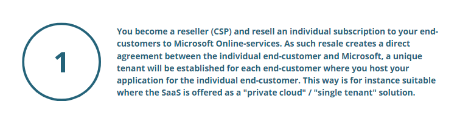

Many software companies that offer SaaS to their end-customers, use Azure to hosting its applications. In order to use Azure to host your application and offer SaaS to your end-customers there are two ways to contract with Microsoft:

As a customer of Microsoft, the main rule is that you are not allowed to share the services with third parties. The “hosting exception” however allow you to use Azure as your hosting platform, provided your product to end-customers are not the Microsoft Online-services as such, but access to a “Customer Solution” such as your own software application as a service. As your end-customers do not get access to Microsoft Online-services as such, this is allowed by Microsoft.
In this situation you do not have to become a reseller (CSP) and enter into a Microsoft Partner Agreement, but you use the “hosting exception” in your own customer agreement with Microsoft as the legal basis to utilize Microsoft Online services and offer SaaS to end-customers. It is not a resale as such. The “hosting exception” is often used by SaaS suppliers for multitenant SaaS offerings.
Read more about your rights and obligations when using the hosting exception, "Hosting Exception-Detailed Walkthrough". It also accounts for the benefits and risk with becoming a CSP or using the hosting exception for you as a SaaS provider.